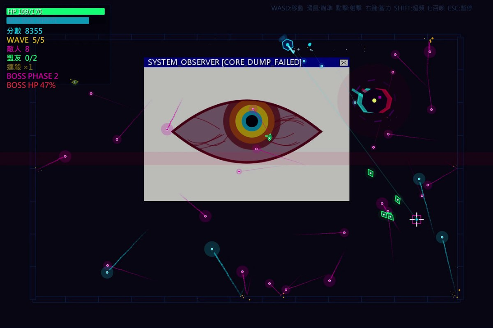
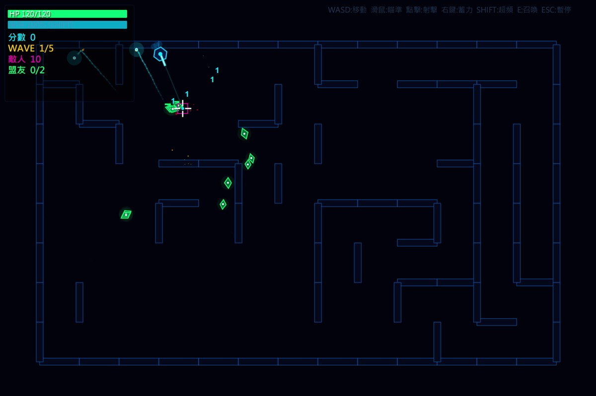
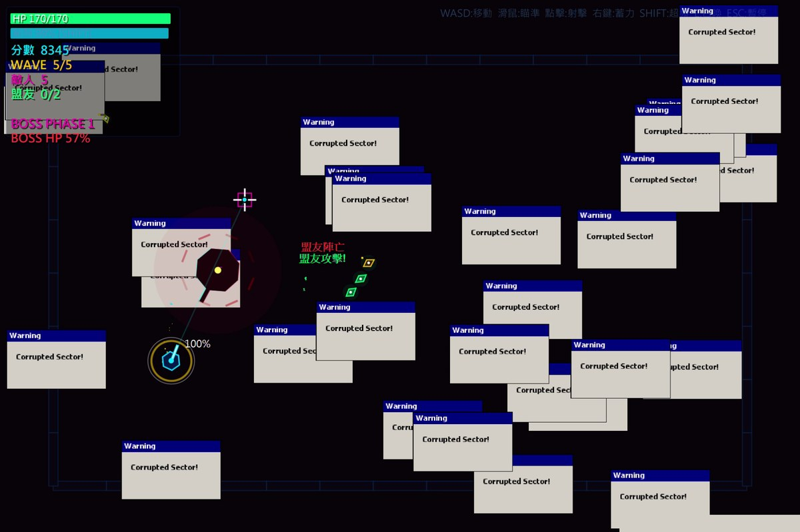
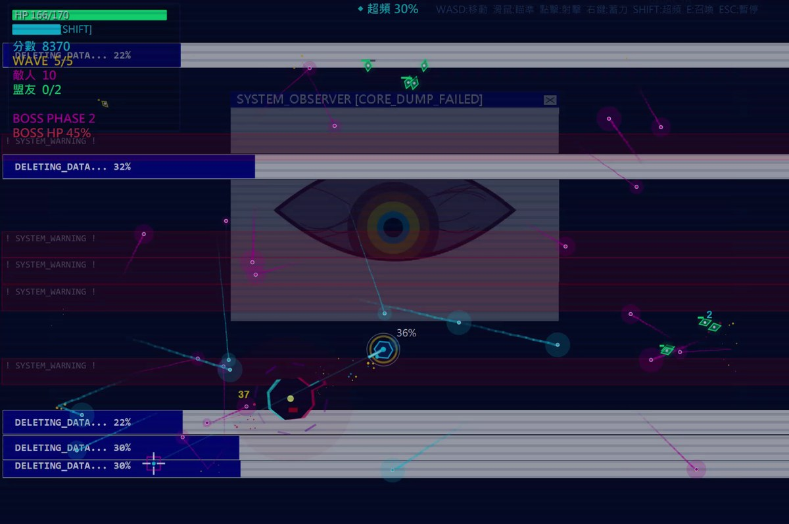
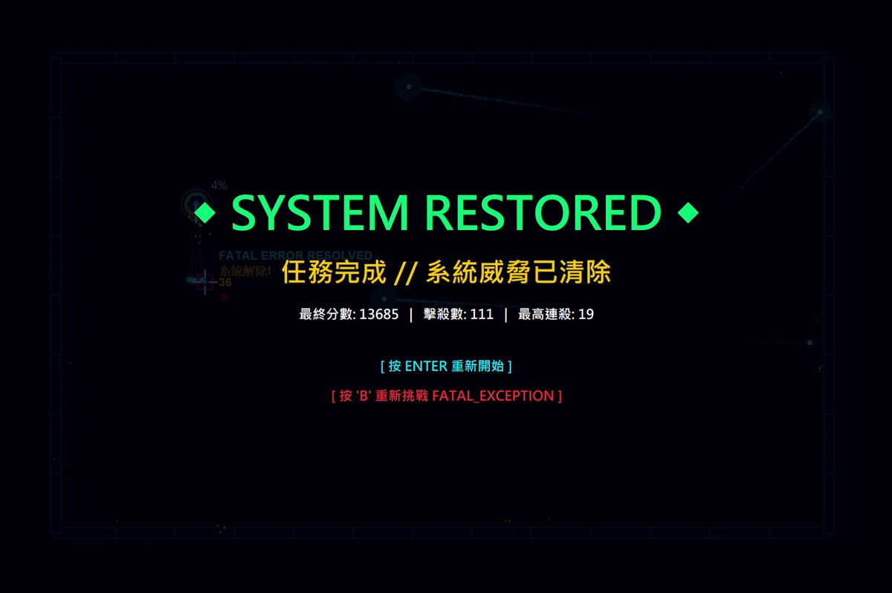

霓虹悖論NEON_PARADOX
自己做好玩的Java俯視射擊遊戲：迷宮會變形，最後的王會跳出假藍屏干擾你。
JavaSwingJava2D





完成的證據

要解決的問題
那時候想學Java，但照課本一題一題寫很無聊，所以乾脆做一個自己想玩的遊戲，邊做邊學。
怎麼解決
做成一個俯視角的射擊遊戲，一共5波。迷宮每一波重新產生，打到一半還會警告、然後變形。每一波結束可以三選一升級。按Shift超頻，敵人和子彈會慢到剩5%，但會一直扣能量，要靠擦過子彈充回來；按E可以把被打暈的敵人變成自己的盟友。
最後一波是王，有好幾個階段，會瞬移、召喚小兵，還會跳出假的藍屏和錯誤視窗擋你的視線。
我負責的部分
- 遊戲的點子、玩法和要加哪些機制，都是我想的
- 把想法和需求交給AI，自己一直玩、自己測，玩到哪裡怪怪的就叫AI修
- 數值自己調：王的血太厚就扣，技能時間太長就一點一點調到剛好
- 有些地方的程式是我自己改的，不會太複雜
AI協作
用到的AI工具
- Claude
我做的判斷
- 要做什麼樣的遊戲、要有哪些機制，例如超頻、把敵人變盟友、王的假藍屏
- 哪裡不好玩、要改成怎樣，數值要調多少
AI做的事
- 整體的程式架構由Claude完成，也幫忙除錯
怎麼驗證
- 沒有寫自動測試，驗證方式就是自己一直玩，發現問題叫AI修，修完再玩一次
技術筆記
架構
整個遊戲是一個Java檔，大約2,000行。主畫面GamePanel用一個迴圈，每一格更新所有東西的位置再重畫。遊戲分成選單、操作說明、遊戲中、暫停、升級、結束、勝利幾個狀態。
敵人有五種：成群移動的小敵人（Boids，模仿鳥群的移動方式：靠近同伴、對齊方向、不要撞在一起）、狙擊、坦克、菁英和王。
做過的決定
- 敵人的速度、射速、準度、大小寫成一組「基因」，每一波結束從被打死的敵人裡挑幾個，交配加突變產生下一波，讓每一波的敵人不完全一樣
- 有一個Director看玩家的血量、擊殺速度和被打中的次數，玩家打得太辛苦就讓敵人的子彈變慢，打得太輕鬆就變快，快被打死的時候偶爾補血
- 超頻會讓時間慢到5%，所以一定要有代價：一直扣能量，啟動一次還要先扣15，避免狂按
驗證過的部分
- 我自己錄了一段4分44秒的試玩影片，從第一波一路打到第五波的王，最後通關：最終分數13,685、擊殺111、最高連殺19
- 2026-11-06另外用Java 21重新編譯、執行過一次，選單、第一波和王關都能正常跑
- 當時主要是自己反覆玩來測，沒有自動測試
還沒做到的
- 重新看程式才發現，基因的fitness（拿來比誰表現好的分數）從來沒有被加分，所以每一波留下來的，其實是最早被打死的敵人，跟原本想要的「表現好的留下來」剛好相反。要補上分數，例如存活時間或打中玩家的次數
- 沒有自動測試，數值平衡全靠手感
- 原始碼還沒放上GitHub
來源與授權
內容來源
- 自己建立：遊戲的點子、玩法和數值是我想的、自己調的。程式是邊學Java邊跟Claude一起寫，整體架構由Claude完成，有些地方我自己改。沒有用別人的素材或課程的程式。